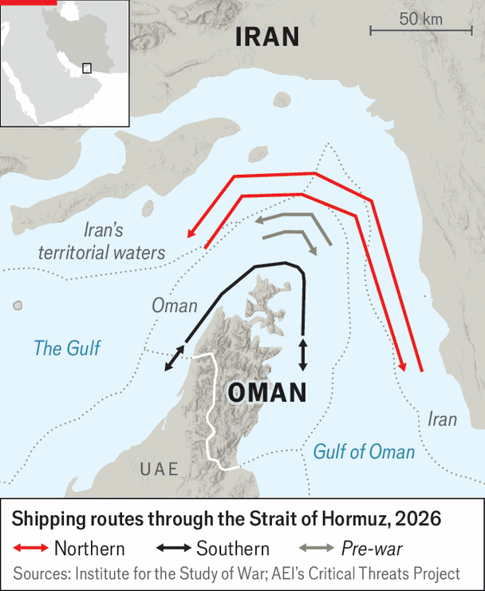

Donald Trump has no good options for reopening the Strait of Hormuz
Yet the stand-off has costs for cash-strapped Iran, too
July 16th 2026
When donald trump signed a preliminary peace deal with Iran last month, he bragged that it “achieves everything we set out to accomplish”. The Gulf war would end and the Strait of Hormuz would reopen. Less than a month later, the agreement looks to be unravelling: fighting has resumed and traffic through the strait has collapsed. This is occurring not in spite of the misnamed memorandum of understanding (mou) but because of it.
Overnight on July 15th Iran targeted American military installations in Bahrain and Kuwait as America continued its bombardment of targets in southern Iran and along the strait. There have been seven such nights of tit-for-tat strikes since July 7th, when Iran started the fighting by attacking three ships in the strait.
For now, both sides are limiting their attacks. America is mostly striking southern Iran. In turn, Iran has not attacked civilian infrastructure in the Gulf. Neither looks eager to return to all-out war.
Still, much of the mou is now a dead letter. America has revoked a sanctions waiver that allowed Iran to sell oil. On July 13th Mr Trump said he would also resume the blockade of Iranian shipping. On July 14th he repeated threats to target Iran’s bridges and power stations unless it returned to talks. The American president wants the strait back open—yet he has no good way to do it.
At the centre of the dispute is a disagreement over the mou. Its fifth paragraph states that Iran will “make arrangements…for the safe passage of commercial vessels”. Like much of the deal, the clause is vaguely worded. America reads it to mean that Iran will remove its mines and unlock the strait. Iran argues that it also confers a right to administer traffic.

The usual route through the strait, known as the Traffic Separation Scheme, is a six-mile-wide corridor through its deepest waters. Mines there imperil ships, forcing vessels to choose between alternative passages: north through Iranian waters, or south through Oman’s. For weeks America’s navy has helped escort tankers through the second route. The un has also encouraged shippers to use it.
The Iranians see this as a threat to their control of the strait and now say the Oman route is closed. America insists it remains open. Rhetoric matters less than reality: if shipowners think they might be attacked, most will consider Hormuz shut. Tanker traffic is at its lowest level since May 25th, says Kpler, a ship-tracker. Just 11 vessels transited the strait on July 12th, down from 36 a week earlier, according to Windward, another such firm. At first, oil markets shrugged off the fighting. Now they look more concerned. The price of Brent crude climbed to $87 a barrel on July 14th, before falling back to $84.50 at the time of publication, up by 17.2% from July 6th.
When the mou was signed, Mr Trump hoped that the promise of sanctions relief would persuade Iran to reopen the strait. The regime is desperate for cash. It claims the war caused $270bn in damage to an economy already reeling from years of sanctions and mismanagement. It signed the deal chiefly to secure financial benefits. Yet it now seems torn between relative pragmatists, who understand the depth of the economic crisis, and ultra-hardliners determined to keep Hormuz in their grasp.
America has thus turned back to pressure. One option for Mr Trump is to carry on with limited attacks on Iranian military sites and equipment. The trouble is that more than 300 such strikes over seven nights have not changed Iranian behaviour. There is no reason to think that an eighth night, or an eightieth, would make the difference. After six weeks of far more intense American and Israeli bombing, the benefits of occasional strikes today are probably marginal. Even if America could knock out all of Iran’s coastal launchers, the regime could continue firing at ships from inland. Many of its missiles and drones have ranges above 1,000km.
A second option is to escalate. Yet doing so carries risk, and no guarantee of a return. Bombing vital infrastructure in Iran would invite reciprocal attacks on Gulf states (and might be a war crime). Deploying ground troops is almost certainly a non-starter in Washington. On July 8th Mr Trump repeated his frequent threat to “take over” Kharg island, home to Iran’s main oil-export terminal. This would not help reopen Hormuz, over 600km away.
Reinstating the blockade may seem less fraught. It brings America and Iran back to the situation that prevailed between early April, when they first announced a ceasefire, and the signing of the mou on June 17th. That was in effect a staring contest, to see which side blinked first under economic pressure. But the outcome was the interim deal that already looks to be falling apart. Nor is there a guarantee that Iran will accept the blockade a second time. If it were to resume bigger attacks on Gulf states, Mr Trump would have to choose between all-out war and retreat.
His third option is to look elsewhere for help. Meaningful support will not be forthcoming. A multilateral mission to secure the strait exists on paper, and Britain and France are willing to work with Oman to clear mines. But renewed fighting will deter would-be participants from sending warships. Germany’s Bundestag failed to vote on the issue before its summer break. Japan remains undecided. Gulf states are reluctant to get involved (and their navies are probably not up to scratch), lest Iran retaliate. China has urged Iran to reopen the strait, but urging is all it has done.
Mr Trump finds himself back where he started three months ago: neither carrots nor sticks can persuade Iran to reopen the strait. Yet the stand-off has real costs for Iran, too. Some hawks in Tehran argue that relinquishing their grip on Hormuz would deprive them of leverage in a future conflict. That misreads reality. So long as Iran has missiles and drones, it can shut the strait at will. Control of Hormuz matters to Iran today as a means, not an end: it is only valuable in a trade for tangible benefits.
With sanctions restored and the blockade resuming, Iran has already lost its immediate gains from the mou. It cannot charge tolls on vessels using the strait in peacetime unless Oman agrees to collaborate. Meanwhile, much of the crude it exported during the first weeks of the deal is sitting unsold: Chinese refiners are instead buying from Arab states, which have priced their oil at a discount to Iran’s.
Neither side has a military route to achieving its goals. Mr Trump cannot bomb the strait open; Iran cannot profit if it is shut. The least bad option for both is the deal they are busy shooting to bits. ■
Sign up to the Middle East Dispatch, a weekly newsletter that keeps you in the loop on a fascinating, complex and consequential part of the world.